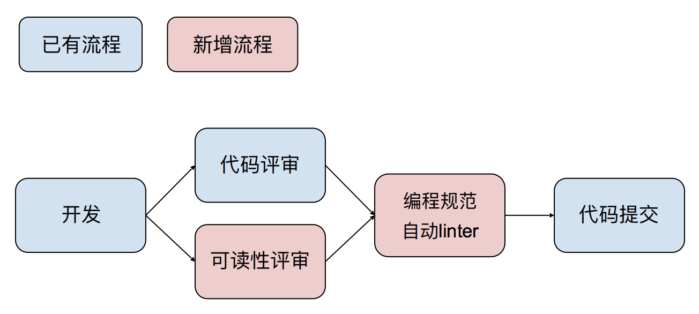

- 00 开篇词 从工程的角度深入理解Python.md.html
- 01 如何逐步突破，成为Python高手？.md.html
- 02 Jupyter Notebook为什么是现代Python的必学技术？.md.html
- 03 列表和元组，到底用哪一个？.md.html
- 04 字典、集合，你真的了解吗？.md.html
- 05 深入浅出字符串.md.html
- 06 Python “黑箱”：输入与输出.md.html
- 07 修炼基本功：条件与循环.md.html
- 08 异常处理：如何提高程序的稳定性？.md.html
- 09 不可或缺的自定义函数.md.html
- 10 简约不简单的匿名函数.md.html
- 11 面向对象（上）：从生活中的类比说起.md.html
- 12 面向对象（下）：如何实现一个搜索引擎？.md.html
- 13 搭建积木：Python 模块化.md.html
- 14 答疑（一）：列表和元组的内部实现是怎样的？.md.html
- 15 Python对象的比较、拷贝.md.html
- 16 值传递，引用传递or其他，Python里参数是如何传递的？.md.html
- 17 强大的装饰器.md.html
- 18 metaclass，是潘多拉魔盒还是阿拉丁神灯？.md.html
- 19 深入理解迭代器和生成器.md.html
- 20 揭秘 Python 协程.md.html
- 21 Python并发编程之Futures.md.html
- 22 并发编程之Asyncio.md.html
- 23 你真的懂Python GIL（全局解释器锁）吗？.md.html
- 24 带你解析 Python 垃圾回收机制.md.html
- 25 答疑（二）：GIL与多线程是什么关系呢？.md.html
- 26 活都来不及干了，还有空注意代码风格？！.md.html
- 27 学会合理分解代码，提高代码可读性.md.html
- 28 如何合理利用assert？.md.html
- 29 巧用上下文管理器和With语句精简代码.md.html
- 30 真的有必要写单元测试吗？.md.html
- 31 pdb & cProfile：调试和性能分析的法宝.md.html
- 32 答疑（三）：如何选择合适的异常处理方式？.md.html
- 33 带你初探量化世界.md.html
- 34 RESTful & Socket：搭建交易执行层核心.md.html
- 35 RESTful & Socket：行情数据对接和抓取.md.html
- 36 Pandas & Numpy：策略与回测系统.md.html
- 37 Kafka & ZMQ：自动化交易流水线.md.html
- 38 MySQL：日志和数据存储系统.md.html
- 39 Django：搭建监控平台.md.html
- 40 总结：Python中的数据结构与算法全景.md.html
- 41 硅谷一线互联网公司的工作体验.md.html
- 42 细数技术研发的注意事项.md.html
- 43 Q&A：聊一聊职业发展和选择.md.html
- 加餐 带你上手SWIG：一份清晰好用的SWIG编程实践指南.md.html
- 结束语 技术之外的几点成长建议.md.html
- 捐赠
26 活都来不及干了，还有空注意代码风格？！
你好，我是蔡元楠，是极客时间《大规模数据处理实战》的作者。今天是我第二次受邀来我们专栏分享了，很高兴再次见到你。今天我分享的主题是：活都来不及干了，还有空注意代码风格吗？！
许多来Google参观的人，用完洗手间后，都会惊奇而略带羞涩地问：“你们马桶前面的门上，贴着的Python编程规范，是用来搞笑的吗？”
这事儿还真不是搞笑，Google对编码规范的要求极其严格。今天，我们就来聊聊编程规范这件事儿。
对于编程规范（style guide） 的认知，很多人可能只停留在第一阶段：知道编程规范有用，整个公司都要求使用驼峰式命名。而后面的阶段，比如为什么和怎么做，就并不了解了。
但在Google，对于编程规范的信仰，可能超出很多人的想象，我给你简单介绍几点。
- 每一个语言都有专门的委员会（Style Committee）制定全公司强制的编程规范，和负责在编程风格争议时的仲裁人（Style Arbiters）。
- 在每个语言相应的编程规范群里，每天都有大量的讨论和辩论。新达成的共识会被写出“大字报”张贴在厕所里，以至于每个人甚至来访者都能用坐着的时候那零碎的5分钟阅读。
- 每一个代码提交，类似于Git里diff的概念，都需要至少两次代码评审（code review），一次针对业务逻辑，一次针对可读性（readability review）。所谓的可读性评审，着重在代码风格规范上。只有通过考核的人，才能够成为可读性评审人（readability reviewer）。
- 有大量的开发自动化工具，确保以上的准则得到强制实施。例如，代码提交前会有linter做静态规则检查，不通过是无法提交代码的。
看到这里，不知道你有怎样的感受？我自己十分认同这样的工程师文化，所以今天，我会给你介绍清楚两点：
- Python的编程规范为什么重要，这对于业务开发来说，究竟有没有帮助？
- 有哪些流程和工具，可以整合到已有的开发流程中，让你的编程规范强制自动执行呢？
在讲解过程中，我会适时引用两个条例来举例，分别是：
- 《8号Python增强规范》（Python Enhacement Proposal #8），以下简称PEP8；
- 《Google Python 风格规范》（Google Python Style Guide），以下简称Google Style，这是源自Google内部的风格规范。公开发布的社区版本，是为了让Google旗下所有Python开源项目的编程风格统一。（http://google.github.io/styleguide/pyguide.html）
相对来说，Google Style是比PEP8更严格的一个编程规范。因为PEP8的受众是个人和小团队开发者，而Google Style能够胜任大团队，企业级，百万行级别代码库。他们的内容，后面我也会简单说明。
统一的编程规范为什么重要？
用一句话来概括，统一的编程规范能提高开发效率。而开发效率，关乎三类对象，也就是阅读者、编程者和机器。他们的优先级是阅读者的体验 >> 编程者的体验 >> 机器的体验。
阅读者的体验>>编程者的体验
写过代码的人可能都有体会，在我们的实际工作中，真正在打字的时间，远比阅读或者debug的时间要少。事实正是如此，研究表明，软件工程中80%的时间都在阅读代码。所以，为了提高开发效率，我们要优化的，不是你的打字时间，而是团队阅读的体验。
其实，不少的编程规范，本来就是为了优化读者体验而存在的。举个例子，对于命名原则，我想很多人应该都有所理解，PEP8第38条规定命名必须有意义，不能是无意义的单字母。
有些人可能会说，啊，编程规范好烦哟，变量名一定要我写完整，打起来好累。但是当你作为阅读者时，一定能分辨下面两种代码的可读性不同：
# 错误示例
if (a <= 0):
return
elif (a > b):
return
else:
b -= a
# 正确示例
if (transfer_amount <= 0):
raise Exception('...')
elif (transfer_amount > balance):
raise Exception('...')
else:
balance -= transfer_amount
再举一个例子，Google Style 2.2条规定，Python代码中的import对象，只能是package或者module。
# 错误示例
from mypkg import Obj
from mypkg import my_func
my_func([1, 2, 3])
# 正确示例
import numpy as np
import mypkg
np.array([6, 7, 8])
以上错误示例在语法上完全合法（因为没有符号冲突name collisions），但是对于读者来讲，它们的可读性太差了。因为my_func这样的名字，如果没有一个package name提供上下文语境，读者很难单独通过my_func这个名字来推测它的可能功能，也很难在debug时根据package name找到可能的问题。
反观正确示例，虽然array是如此大众脸的名字，但因为有了numpy这个package的暗示，读者可以一下子反应过来，哦，这是一个numpy array。不过这里要注意区别，这个例子和符号冲突（name collisions）是正交（orthogonal）的两个概念，即使没有符号冲突，我们也要遵循这样的import规范。
编程者的体验 >> 机器的体验
说完了阅读者的体验，再来聊聊编程者的体验。我常常见到的一个错误倾向，是过度简化自己的代码，包括我自己也有这样的问题。一个典型的例子，就是盲目地使用Python的list comprehension。
# 错误示例
result = [(x, y) for x in range(10) for y in range(5) if x * y > 10]
我敢打赌，一定很少有人能一口气写出来这么复杂的list comprehension。这不仅容易累着自己，也让阅读者看得很累。其实，如果你用一个简单的for loop，会让这段代码更加简洁明了，自己也更为轻松。
# 正确示例
result = []
for x in range(10):
for y in range(5):
if x * y > 10:
result.append((x, y))
机器的体验也很重要
讲完了编程者和阅读者的重要性，我们不能忽视了机器的体验。我们最终希望代码能正确、高效地在电脑上执行。但是，一些危险的编程风格，不仅会影响程序正确性，也容易成为代码效率的瓶颈。
我们先来看看 is 和 == 的使用区别。你能看出下面的代码的运行结果吗？
# 错误示例
x = 27
y = 27
print(x is y)
x = 721
y = 721
print(x is y)
看起来is是比较内存地址，那么两个结果应该都是一样的，可是实际上打印出来的，却分别是True和False！
原因是在CPython（Python的C实现）的实现中，把-5到256的整数做成了singleton，也就是说，这个区间里的数字都会引用同一块内存区域，所以上面的27和下面的27会指向同一个地址，运行结果为True。
但是-5到256之外的数字，会因为你的重新定义而被重新分配内存，所以两个721会指向不同的内存地址，结果也就是False了。
所以，即使你已经清楚，is比较对象的内存地址，你也应该在代码风格中，避免去用is比较两个Python整数的地址。
# 正确示例
x = 27
y = 27
print(x == y)
x = 721
y = 721
print(x == y)
看完这个例子，我们再看==在比较值的时候，是否总能如你所愿呢？同样的，你可以自己先判断一下运行结果。
# 错误示例
x = MyObject()
print(x == None)
打印结果是False吗？不一定。因为对于类来说，==的结果，取决于它的__eq__()方法的具体实现。MyObject的作者完全可能这样实现：
class MyObject(object):
def __eq__(self, other):
if other:
return self.field == other.field
return True
正确的是在代码风格中，当你和None比较时候永远使用 is:
# 正确示例
x = MyObject()
print(x is None)
上面两个例子，我简单介绍了通过编程风格的限制，让is 和 == 的使用更安全。不过，光注意这两点就可以了吗？不要忘记，Python中还有隐式布尔转换。比如：
# 错误示例
def pay(name, salary=None):
if not salary:
salary = 11
print(name, "is compensated", salary, "dollars")
如果有人调用 pay(“Andrew”, 0) ，会打印什么呢？“Andrew is compensated 11 dollars”。当你明确想要比较对象是否是None时，一定要显式地用 is None。
# 正确示例
def pay(name, salary=None):
if salary is not None:
salary = 11
print(name, "is compensated", salary, "dollars")
这就是为什么，PEP8和Google Style都特别强调了，何时使用is， 何时使用 ==，何时使用隐式布尔转换。
不规范的编程习惯也会导致程序效率问题，我们看下面的代码有什么问题：
# 错误示例
adict = {i: i * 2 for i in xrange(10000000)}
for key in adict.keys():
print("{0} = {1}".format(key, adict[key]))
keys()方法会在遍历前生成一个临时的列表，导致上面的代码消耗大量内存并且运行缓慢。正确的方式，是使用默认的iterator。默认的iterator不会分配新内存，也就不会造成上面的性能问题:
# 正确示例
for key in adict:
这也就是为什么Google Style 2.8对于遍历方式的选择作出了限制。
相信读到这里，对于代码风格规范的重要性，你已经有了进一步的理解。如果能够做到下一步，会让你和你的团队脱胎换骨，那就是和开发流程的完全整合。
整合进开发流程的自动化工具
前面我们已经提到了，编程规范的终极目标是提高开发效率。显然，如果每次写代码，都需要你在代码规范上额外花很多时间的话，就达不到我们的初衷了。
首先，你需要根据你的具体工作环境，选择或者制定适合自己公司/团队的规范。市面上可以参考的规范，也就是我在开头提到的那两个，PEP8和Google Style。
没有放之四海而皆准的规范，你需要因地制宜。例如在Google，因为历史原因C++不使用异常，引入异常对整个代码库带来的风险已经远大于它的益处，所以在它的C++代码规范中，禁止使用异常。
其次，一旦确定了整个团队同意的代码规范，就一定要强制执行。停留在口头和大脑的共识，只是水中月镜中花。如何执行呢？靠强制代码评审和强制静态或者动态linter。
当然，需要注意的是，我这里“强制”的意思，不是说如果不做就罚款。那就太low了，完全没有极客精神。我指的“强制”，是把共识写进代码里，让机器来自动化这些流程。比如：
- 在代码评审工具里，添加必须的编程规范环节；
- 把团队确定的代码规范写进Pylint里（https://www.pylint.org/），能够在每份代码提交前自动检查，不通过的代码无法提交。
整合之后，你的团队工作流程就会变成这样：

总结
学到这里，相信你对代码风格的重要性有了全新的认识。代码风格之所以重要，是因为它关乎阅读者的体验、编程者的体验和执行代码的机器体验。
当然，仅仅意识到代码风格重要，是远远不够的。我还具体分享了一些自动化代码风格检查的切实方法，比如强制代码评审和强制静态或者动态linter。总之还是那句话，我们强调编程规范，最终一定是为了提高开发效率，而不是做额外功。
思考题
在你个人或者团队的项目经验中，是否也因为编程规范的问题，踩过坑或者吵过架呢？欢迎留言和我分享，也欢迎你把这篇文章分享出去。
© 2019 - 2023 Liangliang Lee. Powered by gin and hexo-theme-book.